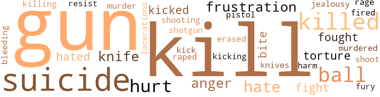

Double Tragedy (The), by Bond, Odessa (1970)
15 music-related terms matched in this text.
Most frequent terms in this topic: dance (5); music (4); song (1); chanted (1); kicking (1)
dance.n.01
Definition: an artistic form of nonverbal communication
| word | sentence |
|---|---|
| dance | He just said , " Let 's dance . " ' |
| dance | Big swimming pool in the basement : a big dance with the Army men every Thursday night . |
| dance | There was even a bus that picked them up every Thursday for the dance . |
| dance | One lady got happy and did a dance down the aisle . |
dance.v.03
Definition: skip, leap, or move up and down or sideways
| word | sentence |
|---|---|
| dance | He took her into his arms and started to dance with her . |
| dancing | They had been dancing for about five minutes , when he took her face in both of his hands . |
kick.v.04
Definition: kick a leg up
| word | sentence |
|---|---|
| kicking | Rocky sat there kicking his right leg over the left . |
music.n.01
Definition: an artistic form of auditory communication incorporating instrumental or vocal tones in a structured and continuous manner
| word | sentence |
|---|---|
| music | During their conference the radio played soft music . |
| music | He cut out the light on his desk , while the radio was still playing soft music . |
| music | She turned to a station with soft music . |
| music | Soft music played in the background . |
sing.v.02
Definition: produce tones with the voice
| word | sentence |
|---|---|
| sing | The congregation began to sing . |
song.n.01
Definition: a short musical composition with words
| word | sentence |
|---|---|
| song | It was a slow song . |
tone.v.01
Definition: utter monotonously and repetitively and rhythmically
| word | sentence |
|---|---|
| chanted | " Oh , Johnny , " she chanted , " do n't make me , do n't make me . " |
tune.n.01
Definition: a succession of notes forming a distinctive sequence
| word | sentence |
|---|---|
| tune | She felt marvelously in tune with nature . |
102 violence-related terms matched in this text.
Most frequent terms in this topic: gun (13); kill (13); suicide (10); killed (9); ball (7)
anger.n.01
Definition: a strong emotion; a feeling that is oriented toward some real or supposed grievance
| word | sentence |
|---|---|
| anger | In a fit of anger , Deidra hung up the telephone . |
| anger | In a fit of anger , she left alone for Kansas City the following morning . |
| anger | Fred stiffened with anger . |
bleeding.n.01
Definition: the flow of blood from a ruptured blood vessel
| word | sentence |
|---|---|
| bleeding | After a half-hour Carson , got the skin closed and the bleeding stopped . |
erase.v.01
Definition: remove from memory or existence
| word | sentence |
|---|---|
| erased | Nothing he did , nothing that was said against him disturbed her confidence in the least ; black was white , criticism was written off as jealousy , every doubtful act was erased from her mind . |
fight.n.05
Definition: a boxing or wrestling match
| word | sentence |
|---|---|
| fight | Not only did the patient have small veins , but she put up a hard fight to pre - vent him from sticking her , but finally the blood began to flow . |
| fight | There was little life or fight left in his body . |
fight.v.02
Definition: fight against or resist strongly
| word | sentence |
|---|---|
| fought | With fierce concentration , Deidra fought to win his approval and put her mind at ease . |
| fought | Studying her crystal ball , Valerie said that Kashmir would be fought over by his country , and that was the way the evening went . |
frustration.n.03
Definition: a feeling of annoyance at being hindered or criticized
| word | sentence |
|---|---|
| frustration | " What is frustration ? " |
| frustration | Deidra 's expression changed quickly from frustration to relaxation . |
| frustration | sion changed quickly from frustration to relaxation . |
fury.n.01
Definition: a feeling of intense anger
| word | sentence |
|---|---|
| rage | She flew into a rage . |
| fury | As Shakespeare had said : Life 's but a walking shadow , a poor player That struts and frets his hour upon the stage And then is heard no more : it is a tale Told by an idiot , full of sound and fury Signifying nothing . |
gun.n.01
Definition: a weapon that discharges a missile at high velocity (especially from a metal tube or barrel)
| word | sentence |
|---|---|
| gun | She pulled the gun on him and his wife . |
| gun | She opened the glove compartment and was frightened when she saw a gun in there . |
| gun | She did , and there lay a gun . |
| gun | " See that gun ? |
| gun | Deidra knew that there was a gun in the glove compartment . |
| gun | He reached for the glove compartment and got the gun out . |
| gun | Finally , Johnny put the gun back into the glove compartment . |
| gun | Pass me the gun . " |
| gun | She refused to pass the gun . |
| gun | She carried the pan to the kitchen and picked up his gun . |
| gun | Remembering the story , I searched for a gun . |
| gun | I wrapped the gun as a parcel . |
| gun | When she answered I pulled the gun and went in . |
hate.v.01
Definition: dislike intensely; feel antipathy or aversion towards
| word | sentence |
|---|---|
| hated | She hated his wife more than anyone on earth because she knew that she was using his children to hold the man she loved . |
| hate | I hate to see you so worried . " |
| hate | I hate to keep taking from you and not giving anything in return . |
| hate | I would hate to see you talk and then disappear . " |
| hate | As she got ready to get out of the car , Johnny said , " I hate to see you go . " |
| hated | I hated eating in Poor Joe 's every day . " |
hurt.v.04
Definition: cause damage or affect negatively
| word | sentence |
|---|---|
| hurt | You would be hurt and I do n't think you should be hurt again . |
injury.n.01
Definition: any physical damage to the body caused by violence or accident or fracture etc.
| word | sentence |
|---|---|
| hurt | Feeling hurt , Deidra said , " He does n't come to see all of his patients . " |
| harm | " It is a pity that these older women can do so much harm to innocent children , yet something must be done to help your son . |
jealousy.n.01
Definition: a feeling of jealous envy (especially of a rival)
| word | sentence |
|---|---|
| jealousy | Nothing he did , nothing that was said against him disturbed her confidence in the least ; black was white , criticism was written off as jealousy , every doubtful act was erased from her mind . |
kick.v.04
Definition: kick a leg up
| word | sentence |
|---|---|
| kicking | Rocky sat there kicking his right leg over the left . |
kick_back.v.02
Definition: spring back, as from a forceful thrust
| word | sentence |
|---|---|
| Kick | Kick and Peter went their separate ways . |
| kicked | The next thing we knew , the Dean of Men was fired and the girl got kicked out of school . |
| kicked | He said she was n't going to get him kicked out of school . |
kill.v.10
Definition: cause the death of, without intention
| word | sentence |
|---|---|
| killed | That evening Deidra said to her mother , " I just killed Dr. Carson . " |
| killed | " I killed him . " |
| killed | " You mean I killed my father ? |
| killed | Now that she had killed her father , her dream about the man without a head no longer recurred . |
| killed | If you do have children , you will be killed . |
| kill | " If you do n't do what they say , will they kill you ? " |
| killed | " It 's really a shame that girl got killed like that . |
| killing | There are all kinds of ways of killing people . |
| kill | " If you try to shoot me , I will have to kill you . " |
| kill | She was dressed to kill . |
| kill | Why do n't you just kill me ? " |
| kill | " Would you kill her for me ? " |
| kill | Maybe I 'll marry her and then kill her . |
| killed | She 'll be killed . " |
| kill | I would just as soon kill you . |
| kill | I might kill you in your sleep . " |
| killed | " Perhaps I should shoot you in the head four times , just like that girl who got killed , but that would be too easy for you , much too easy . " |
| kill | Man , I did n't tell you to kill me in the first round . " |
| kill | I 'll kill you . |
| kill | I 'll kill you . " |
| kill | If I tried to get out , they would kill me . " |
| killed | " Suppose we killed them ? " |
| kill | He beat her and me severely and said he would kill me if he ever saw me near the house . " |
knife.n.02
Definition: a weapon with a handle and blade with a sharp point
| word | sentence |
|---|---|
| knives | Heavy draperies and soundproofed walls deadened all noise , except for the small clatter of dishes and knives and forks . |
| knife | She also knew that there was a knife under the seat . |
| knife | She went downstairs and got a butcher knife and a long jump rope , which she placed in her pocketbook . |
| knife | On second thought , Deidra decided not to use the knife . |
laceration.n.01
Definition: a torn ragged wound
| word | sentence |
|---|---|
| lacerations | Just as he was finishing lunch he heard his page on the. , loudspeaker ; there was a patient for him in the Emergency Room with scalp lacerations . |
murder.n.01
Definition: unlawful premeditated killing of a human being by a human being
| word | sentence |
|---|---|
| murder | " Mrs. Midnight , you are under arrest for the murder of Dr. Carson . " |
murder.v.01
Definition: kill intentionally and with premeditation
| word | sentence |
|---|---|
| murdered | She looked away and said , " Between 1904 and 1908 three prominent men will be murdered . |
musket_ball.n.01
Definition: a solid projectile that is shot by a musket
| word | sentence |
|---|---|
| ball | " Now have a seat in front of my crystal ball . " |
| ball | The soothsayer looked back into the crystal ball . |
| ball | Holding up pictures - a chair , a ball , a house , and other familiar objects - Carson waited for Deidra to say the first thing that came into her mind . |
| ball | " Bat , " Deidra cried in response to the picture of the ball . |
| ball | She then sat down and showed her crystal ball and said , " I 'm now open to questions . " |
| ball | She looked at him confidently and said , " My crystal ball does n't lie . " |
| ball | Studying her crystal ball , Valerie said that Kashmir would be fought over by his country , and that was the way the evening went . |
open_fire.v.01
Definition: start firing a weapon
| word | sentence |
|---|---|
| fired | The next thing we knew , the Dean of Men was fired and the girl got kicked out of school . |
pain.v.02
Definition: cause emotional anguish or make miserable
| word | sentence |
|---|---|
| hurt | You would be hurt and I do n't think you should be hurt again . |
| hurt | If I did this to you , you would be hurt and frustrated . " |
| hurt | She was very hurt and angry . |
pistol.n.01
Definition: a firearm that is held and fired with one hand
| word | sentence |
|---|---|
| pistol | I took the pistol and began looking for my first victim . |
rape.v.01
Definition: force (someone) to have sex against their will
| word | sentence |
|---|---|
| raped | I heard how he had gotten into ladies ' homes and raped them . |
resist.v.04
Definition: withstand the force of something
| word | sentence |
|---|---|
| resist | Deidra Ann , not being able to resist the temptation , said , " Yes , Jimmy . |
shoot.v.02
Definition: kill by firing a missile
| word | sentence |
|---|---|
| shoot | " If you try to shoot me , I will have to kill you . " |
shooting.n.02
Definition: killing someone by gunfire
| word | sentence |
|---|---|
| shooting | There might be some shooting . " |
shotgun.n.01
Definition: firearm that is a double-barreled smoothbore shoulder weapon for firing shot at short ranges
| word | sentence |
|---|---|
| shotgun | Next thing I knew she had gone to his office with a shotgun . |
sting.n.03
Definition: a painful wound caused by the thrust of an insect's stinger into skin
| word | sentence |
|---|---|
| bite | Carson had just enough time to rush home and take a shower , and maybe even catch a bite to eat . |
| bite | He stopped at " Poor Joe 's " restaurant for a bite , and he then rushed to the office . |
suicide.n.01
Definition: the act of killing yourself
| word | sentence |
|---|---|
| suicide | Here was a girl who , after having rheumatic fever , tried to commit suicide . |
| suicide | Why would a beautiful seventeen-year-old want to commit suicide ? |
| suicide | " Is that why you tried to commit suicide ? " |
| suicide | However , if they had lost everything , that still would n't be a reason for you to com - mit suicide . |
| suicide | " Now , Deidra , do you understand why you tried to commit suicide ? " |
| suicide | He knew why she had tried to commit suicide , but now he had to try to bring back her memory . |
| suicide | Later she tried to commit suicide . " |
| suicide | " That beautiful girl - a suicide case ? " |
| suicide | Unable to bear the agony of the thought , she tried to commit suicide . " |
| suicide | The second patient was a suicide case . |
torment.v.01
Definition: torment emotionally or mentally
| word | sentence |
|---|---|
| torture | Unable to bear the torture any longer , she called his house . |
| torture | The next day she began the torture treatment . |
25 religion-related terms matched in this text.
Most frequent terms in this topic: church (7); God (3); heaven (3); Preacher (2); divine (1)
blessing.n.05
Definition: the act of praying for divine protection
| word | sentence |
|---|---|
| blessing | This girl was indeed a blessing for James Brisco . |
church.n.02
Definition: a place for public (especially Christian) worship
| word | sentence |
|---|---|
| church | " That 's the general idea - after church . " |
| church | Deidra went downstairs , ate breakfast and hurried back upstairs to dress for church . |
| church | Trying to explain more fully he said , " After church some of my friends and some my wife 's friends came over . |
| church | She went to church as usual . |
| church | He said that he was building a church . |
| churches | He went on to say that he was inviting one of those " foot-washing churches " over . |
church.n.04
Definition: the body of people who attend or belong to a particular local church
| word | sentence |
|---|---|
| church | It was a bright Sunday morning when church started . |
| church | Deidra 's friend just stood there saying , " My poor church ! " |
eden.n.01
Definition: any place of complete bliss and delight and peace
| word | sentence |
|---|---|
| heaven | His eyes were closed and he acted as if he were in heaven . |
| heaven | He cried , " Deidra , what in heaven 's name are you doing ? " |
| heaven | He kissed her hard , and heaven and earth met . |
god.n.03
Definition: a man of such superior qualities that he seems like a deity to other people
| word | sentence |
|---|---|
| God | He claimed to be God like and Deidra Ann believed him . |
| God | Good God Almighty . |
| God | I do n't believe in playing with God 's Temple . |
godhead.n.01
Definition: terms referring to the Judeo-Christian God
| word | sentence |
|---|---|
| divine | Deidra smiled back ; she felt divine . |
| Almighty | Good God Almighty . |
hell.n.01
Definition: any place of pain and turmoil
| word | sentence |
|---|---|
| hell | If I ever get the hell away from you , you 'll never see me again . " |
preacher.n.01
Definition: someone whose occupation is preaching the gospel
| word | sentence |
|---|---|
| Preacher | " The Preacher . " |
| Preacher | Johnny often called himself " The Preacher . " |
religion.n.01
Definition: a strong belief in a supernatural power or powers that control human destiny
| word | sentence |
|---|---|
| religion | Deidra felt she needed all the religion she could get at this time , so she agreed to come . |
| faith | I 've heard a lot about heart transplants , but I ca n't say I have much faith in them . |
sermon.n.02
Definition: a moralistic rebuke
| word | sentence |
|---|---|
| sermon | Deidra said , " Lying here makes me think of a sermon I once heard : ' The Lord is my shepherd , I shall not want . |
tone.v.01
Definition: utter monotonously and repetitively and rhythmically
| word | sentence |
|---|---|
| chanted | " Oh , Johnny , " she chanted , " do n't make me , do n't make me . " |
worship.v.02
Definition: show devotion to (a deity)
| word | sentence |
|---|---|
| worshipped | She adored him and worshipped him . |